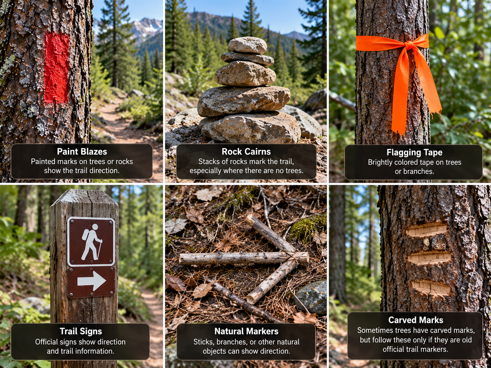

Compass
Learn how a compass can help identify direction outdoors.
Learn More →Choose a skill to learn about navigation and ways to signal for help.
Learn how a compass can help identify direction outdoors.
Learn More →
Learn how trail markers can help hikers follow a route.
Learn More →
Learn how a visible fire or smoke can be used to signal for help.
Learn More →
Learn how large ground markings can help attract rescuers.
Learn More →